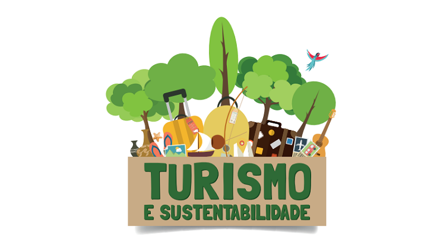

Aspectos do Turismo
o turismo é um fenômeno que compreende três dimensões: social, cultural e econômica. A prática está associada ainda com todas as atividades que os visitantes, chamados de turistas, realizam na localidade de destino, o que inclui a movimentação financeira.
- Relação com a Natureza:O turismo e a recreação encontram na natureza e nos componentes da sua biodiversidade − a diversidade de espécies (da fauna e flora) e a diversidade de ecossistemas (terrestres e aquáticos)−, uma fonte de recursos cada vez mais valorizados para o seu desenvolvimento.
Aspectos das pessoas
- Oportunidades Econômicas:O turismo no Brasil tem contribuído significativamente para a geração de novos postos de trabalho e para a geração de renda da população.
- Infraestrutura:conjunto de recursos físicos, serviços e instalações que são disponibilizados para atender às necessidades dos turistas.
- Cultura e Entretenimento:compreende as atividades turísticas relacionadas à vivência do conjunto de elementos significativos do patrimônio histórico e cultural e dos eventos culturais, valorizando e promovendo os bens materiais e imateriais da cultura.
Turismo e Sustentabilidade
Entre as dificuldades para tornar o turismo 100% sustentável no Brasil estão o desconhecimento da importância do turismo sustentável por parte da população e a falta de elaboração, implementação e monitoramento de políticas públicas que incentivem esse tipo de turismo:
- Adaptação e Crescimento:O turismo potencializa a interação humana e a integração política, cultural e econômica, o que o torna importante para o desenvolvimento das sociedades e a promoção da sustentabilidade.
- Novas Adaptações:A natureza é um dos principais atrativos turísticos. Práticas como a promoção de roteiros em áreas protegidas, a conscientização sobre a importância de não deixar lixo ou danificar os ambientes naturais, além do incentivo à utilização de transporte sustentável, são medidas eficazes para preservar o meio ambiente.
- Oportunidades de Trabalho:O campo de atuação no mercado de trabalho em Turismo no Brasil é vasto e ainda está em expansão. Tanto o licenciado quanto o bacharel dessa área pode trabalhar em agências de turismo, eventos, hotelaria e até mesmo transportes aéreos.